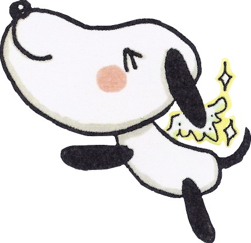
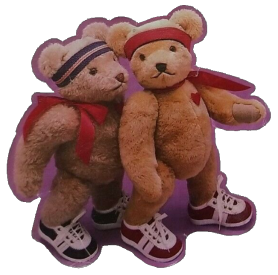
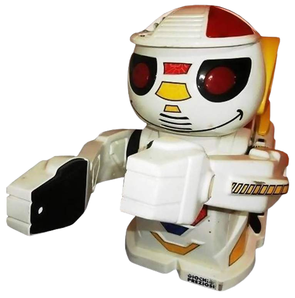
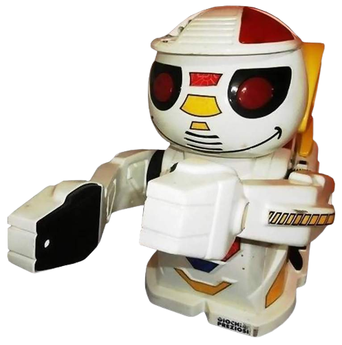
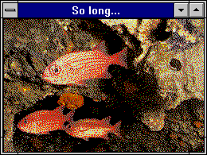
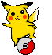

Find my artwork on tumblr, instagram and cohost.
Support me & my art!Commission info, My shop. Find me more casually on my main tumblr !
I block people such as "proshippers", pedophiles, TERFs, transmeds, racists, bigots in general, endogenic
systems and their supporters. Id rather not have any of them interact with my content At All.
If youre under
the age of 16 I would avoid following me on any of my socials, though I dont post 18+ content, I do post
suggestive art sometimes.
Call me Chaqui, or other names here too!
nicknames and all are welcome and loved
18 y/o. She/It. Ella/Elle
Butch Trans Bear Woman
Mixed Indigenous Latina from Chile
autistic, schizspec, system & among otherstuff
Studying to get a degree in visual arts
 Taken by my dear Celebi
Taken by my dear Celebi
13/07/2022

Check out my Artwork Diary
View my Vaporeon Shrine
I speak Spanish & English, and am slowly learning Mapudungún, Polish, Japanese, Portuguese, amongst other languages.
Im alright with people calling me dude/guy/bro, just dont call me a man or masculine terms. Thumbs Up!
I have terrible memory due to health conditions, so Im sorry if I ever forget something, I mostly do remember names & definitely remember important information but there still might be things I cant remember fully, hope its understandable.
 

My main interests include: Zatch Bell, JJBA, Mashin Eiyuuden Wataru, DoroHeDoro,
Transformers, Parappa the Rapper/Um Jammer Lammy, Pokemon, Ib,
Slasher Movies, General Horror (films/games/books), Biology (especially Taxonomy/Phylogeny, Arthropods,
Entomology, Mycology, and Pallas cats), SM64 soundfont covers, the color green, and other miscalleanous stuff.
Theres a lot of other series & shows I like, just ask about those ! Or you can probably guess by my artwork and other mainblog posts haha.
I love arthropods a lot and I understand fear of them, but please be aware I post them a lot on my accounts !
I tag them as "#arthropod" on my main tumblr blog. If you need to know any other tags or
need me to tag anything just message me.
I also like music like Lauren Bousfield, Osamu Sato, Psychedelic Porn Crumpets, King Crimson, Pink Floyd, Jun Togawa, bôa,
Oingo Boingo, of Montreal, BUCK-TICK, System
of a Down, Aphex Twin, MF DOOM, SHAZNA, Fleshgod Apocalypse, and a bunch of video game soundtracks
Theres a lot
more that I wont list because it really is a lot. if youre curious and want to know, send an ask ! music
recommendations are more than welcome too.

Special Thanks to Rita for helping me out with this page's code !
"In a way, you are poetry material; you are full of cloudy subtleties I am willing to spend a lifetime figuring
out. Words burst in your essence and you carry their dust in the pores of your ethereal individuality."
-Franz Kafka (Letters to Milena)